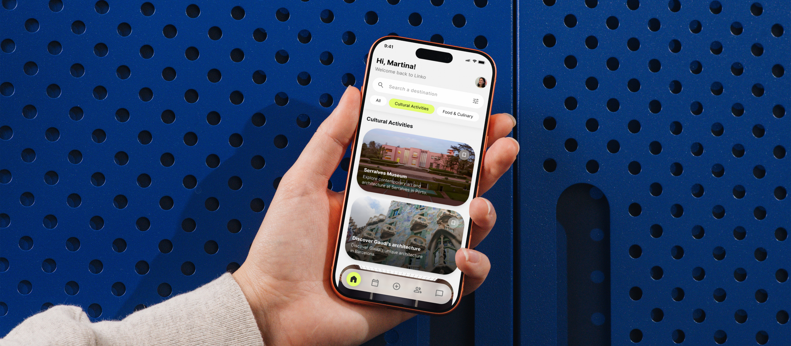
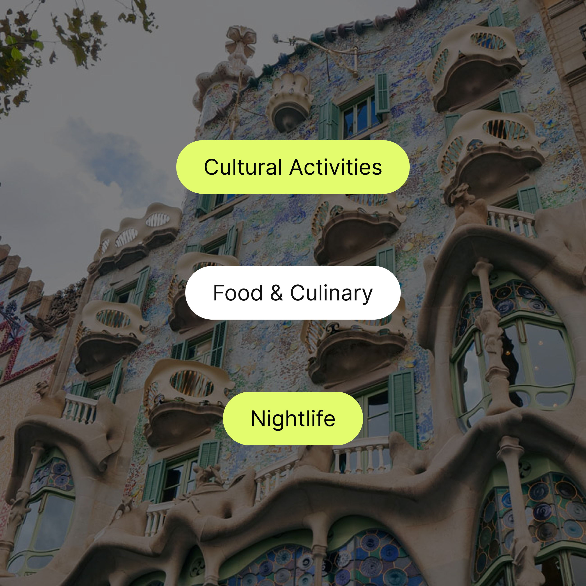
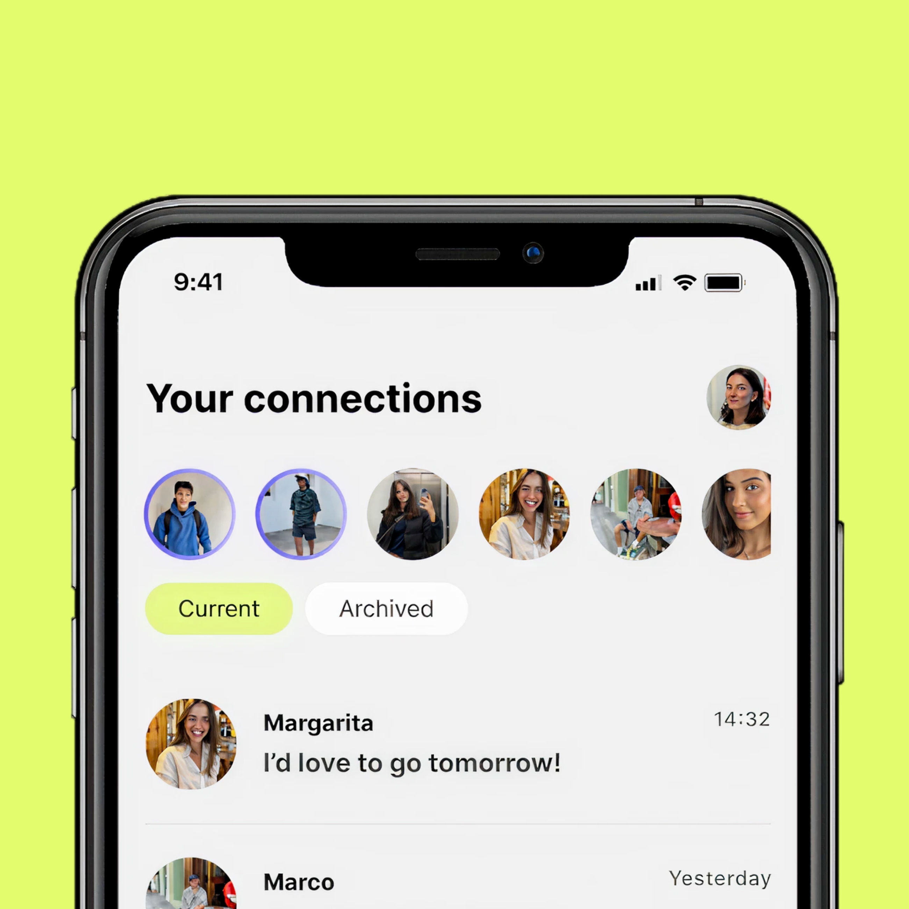
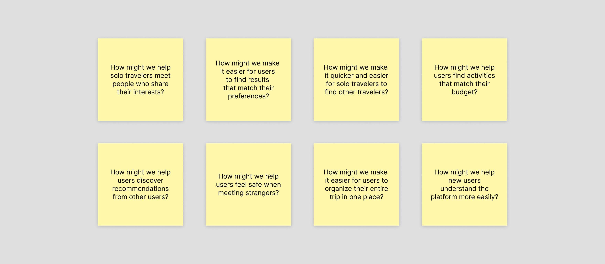
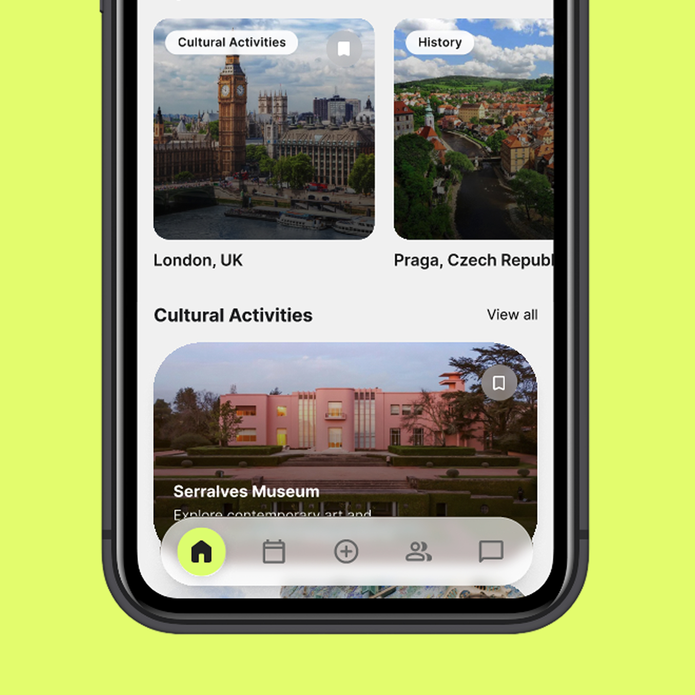

Linko
A digital product designed for young users to organize their solo trips and connect with other travelers who share their interests, allowing them to make plans and experiences together. The interface follows a clean, minimalist and intuitive aesthetic, while remaining attractive to the target audience.
- Product Design
- UX/UI



Problem
The lack of travel companions and the difficulty of finding people with similar interests can make travelers postpone or give up on their plans. Additionally, not knowing where to find like-minded travelers to connect with and share experiences can make traveling alone feel less appealing.
Research
The problem was addressed using the Design Sprint methodology, which enables complex challenges related to design and product development to be solved, potential solutions to be generated and ideas to be validated with users quickly and efficiently.
As part of its various stages, during the "How Might We?" phase, several questions were formulated to transform the problems, obstacles and complaints identified by users into open opportunities for innovation, encouraging the exploration of new perspectives and the generation of potential solutions.

Decisions
User Filters: Interest-based filters that allow users to discover experiences based on their preferences, such as Arts & Culture, Nightlife, Outdoor Activities, History & Heritage, Sustainable Travel and more.
Nearby Connections: The digital product connects users with other travelers who share similar interests and are nearby, making it quicker and easier for them to meet, socialize and explore together.
Safety & Privacy: To help solo travelers feel safer, the platform displays only approximate locations. This protects their privacy while allowing them to discover and connect with nearby travelers.
Schedule & Activity Matching: Users can create and organize their own itineraries based on their interests, preferences and availability. The app also identifies other travelers who plan to attend the same activities at the same time, making it easier to connect, coordinate plans and enjoy experiences together.
Solution
The result is an easy-to-use digital product that helps solo travelers plan and organize their trips based on their time, budget and personal preferences, while connecting them with like-minded travelers along the way. The platform makes it easy, quick and safe to discover shared activities, coordinate plans and meet new people while maintaining control over their privacy and location.

